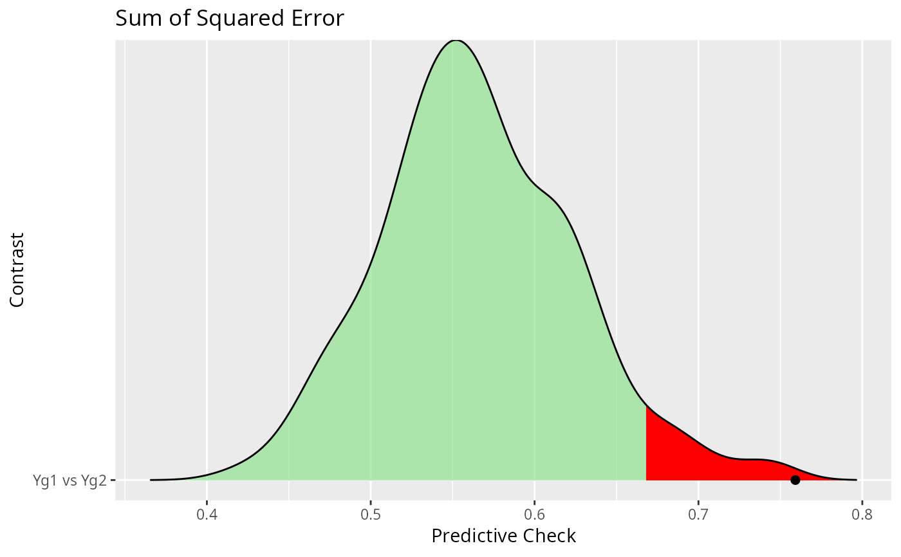
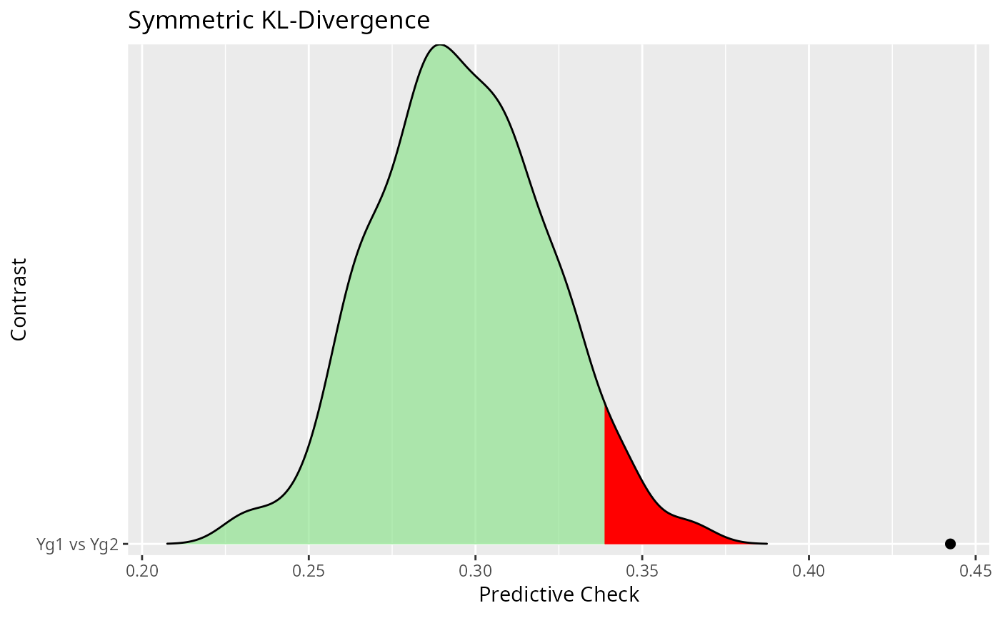

Plot the predictive check with ggridges
Usage
# S3 method for class 'ggm_compare_ppc'
plot(
x,
critical = 0.05,
col_noncritical = "#84e184A0",
col_critical = "red",
point_size = 2,
...
)Arguments
- x
An object of class
ggm_compare_ppc- critical
Numeric. The 'significance' level (defaults to
0.05).- col_noncritical
Character string. Fill color for the non-critical region (defaults to
"#84e184A0").- col_critical
Character string. Fill color for the critical region (defaults to
"red").- point_size
Numeric. The point size for the observed score (defaults to
2).- ...
Currently ignored.
Note
See ggridges for many examples.
Examples
# \donttest{
# data
Y <- bfi
#############################
######### global ############
#############################
# males
Ym <- subset(Y, gender == 1,
select = - c(gender, education))
# females
Yf <- subset(Y, gender == 2,
select = - c(gender, education))
global_test <- ggm_compare_ppc(Ym, Yf,
iter = 250,
progress = FALSE)
#> BGGM: Predictive Check (Contrast 1)
#> BGGM: Finished
plot(global_test)
#> $plot_sse
#> Warning: The dot-dot notation (`..quantile..`) was deprecated in ggplot2 3.4.0.
#> ℹ Please use `after_stat(quantile)` instead.
#> ℹ The deprecated feature was likely used in the BGGM package.
#> Please report the issue at <https://github.com/donaldRwilliams/BGGM/issues>.
#> Picking joint bandwidth of 0.0165

#>
#> $plot_jsd
#> Picking joint bandwidth of 0.00684

#>
# }